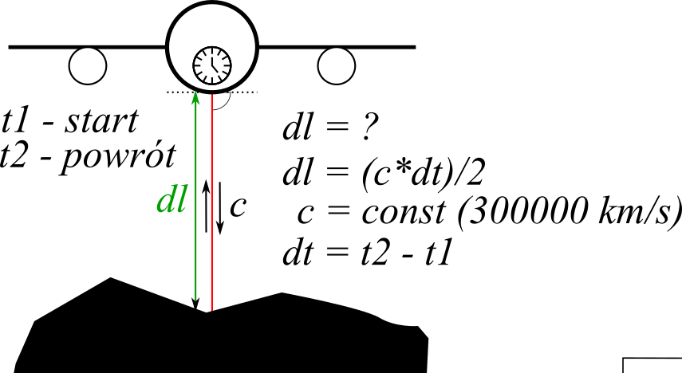
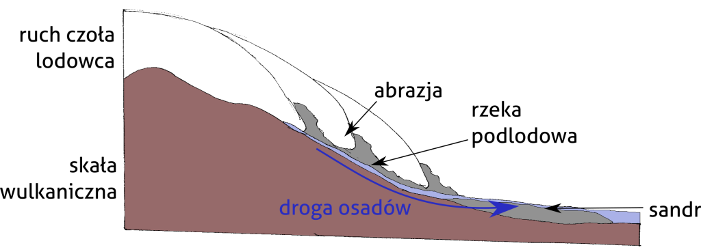
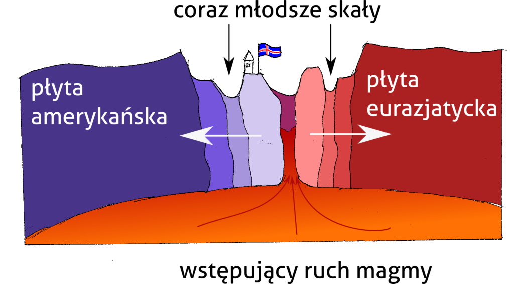

<?xml version="1.0" encoding="UTF-8"?><rss version="2.0"
	xmlns:content="http://purl.org/rss/1.0/modules/content/"
	xmlns:wfw="http://wellformedweb.org/CommentAPI/"
	xmlns:dc="http://purl.org/dc/elements/1.1/"
	xmlns:atom="http://www.w3.org/2005/Atom"
	xmlns:sy="http://purl.org/rss/1.0/modules/syndication/"
	xmlns:slash="http://purl.org/rss/1.0/modules/slash/"
	>

<channel>
	<title>Julian Podgórski</title>
	<atom:link href="" rel="self" type="application/rss+xml" />
	<link>../../mojastrona/index.html</link>
	<description>Jestem geografem i specjalistą GIS, szukającym pracy zdalnej</description>
	<lastBuildDate>Mon, 29 Jul 2024 10:32:18 +0000</lastBuildDate>
	<language>pl-PL</language>
	<sy:updatePeriod>
	hourly	</sy:updatePeriod>
	<sy:updateFrequency>
	1	</sy:updateFrequency>
	<generator>https://wordpress.org/?v=6.6.1</generator>
	<item>
		<title>Popularyzacja nauki</title>
		<link>../science-communication-2/index.html</link>
		
		<dc:creator><![CDATA[jpodgo]]></dc:creator>
		<pubDate>Fri, 26 Jul 2024 14:35:19 +0000</pubDate>
				<category><![CDATA[Projektowanie graficzne]]></category>
		<category><![CDATA[Wszystko]]></category>
		<guid isPermaLink="false">../index.html?p=208</guid>

					<description><![CDATA[Podczas mojej pracy w Instytucie Geofizyki Polskiej Akademii Nauk byłem zaangażowany w liczne działania popularnonaukowe. Wśród moich zadań znajdowało się projektowanie i przedstawianie webinariów (seminariów internetowych) dla dzieci i szerokiej publiczności. Webinaria obejmowały tematy geofizyki, techniczne aspekty teledetekcji i kwestie kulturowe Arktyki. Niektóre z nich wymagały ode mnie przygotowania materiałów graficznych takich, jak diagramy i<div class="read-more-wrapper"><a class="read-more" href="../science-communication-2/index.html" title="Read More"> <span class="button ">Read More</span></a></div>]]></description>
										<content:encoded><![CDATA[
<p class="has-medium-font-size">Podczas mojej pracy w Instytucie Geofizyki Polskiej Akademii Nauk byłem zaangażowany w liczne działania popularnonaukowe. Wśród moich zadań znajdowało się projektowanie i przedstawianie webinariów (seminariów internetowych) dla dzieci i szerokiej publiczności. Webinaria obejmowały tematy geofizyki, techniczne aspekty teledetekcji i kwestie kulturowe Arktyki. Niektóre z nich wymagały ode mnie przygotowania materiałów graficznych takich, jak diagramy i mapy. Zebrałem tutaj te grafiki. Wykorzystywałem Inkscape do narysowania cyfrowych ilustracji, ale część z nich jest oparta o moje rysunki ołówkiem na papierze.</p>


<div class="wp-block-columns is-layout-flex wp-container-core-columns-is-layout-1 wp-block-columns-is-layout-flex">
<div class="wp-block-column is-layout-flow wp-block-column-is-layout-flow">
<figure class="wp-block-image size-full"><figcaption class="wp-element-caption">Schematyczny rysunek pokazujący działanie i podstawę matematyczną lotniczego skanowania laserowego</figcaption></figure>
</div>


<div class="wp-block-column is-layout-flow wp-block-column-is-layout-flow">
<figure class="wp-block-image size-full"><figcaption class="wp-element-caption">Schematyczny rysunek przedstawiający zasadę odbicia sygnału w skanowaniu laserowym</figcaption></figure>
</div>
</div>


<div class="wp-block-columns is-layout-flex wp-container-core-columns-is-layout-2 wp-block-columns-is-layout-flex">
<div class="wp-block-column is-layout-flow wp-block-column-is-layout-flow">
<figure class="wp-block-image size-large"><figcaption class="wp-element-caption">Schematyczny rysunek objaśniający erozję lodowcową prowadzącą do powstania fjordu</figcaption></figure>
</div>


<div class="wp-block-column is-layout-flow wp-block-column-is-layout-flow">
<figure class="wp-block-image size-large"><figcaption class="wp-element-caption">Schematyczne przedstawienie hydrologicznych i sedymentologicznych procesów prowadzących do powstania sandru</figcaption></figure>
</div>
</div>


<div class="wp-block-columns is-layout-flex wp-container-core-columns-is-layout-3 wp-block-columns-is-layout-flex">
<div class="wp-block-column is-layout-flow wp-block-column-is-layout-flow">
<figure class="wp-block-image size-large"><figcaption class="wp-element-caption">Schematyczne przedstawienie ekspansji dna oceanicznego w strefie ryftu na przykładzie Islandii.</figcaption></figure>
</div>


<div class="wp-block-column is-layout-flow wp-block-column-is-layout-flow">
<figure class="wp-block-image size-large"><figcaption class="wp-element-caption">Schematyczne przedstawienie transferu ciepła przez skorupę ziemską, gejzerów i zjawisk hydrotermalnych.</figcaption></figure>
</div>
</div>
]]></content:encoded>
					
		
		
			</item>
		<item>
		<title>Ewolucja powierzchni lodowca podczas ekstremalnej suszy</title>
		<link>../art-universidad-debris-2/index.html</link>
		
		<dc:creator><![CDATA[jpodgo]]></dc:creator>
		<pubDate>Fri, 26 Jul 2024 14:26:04 +0000</pubDate>
				<category><![CDATA[Nauka]]></category>
		<category><![CDATA[Wszystko]]></category>
		<guid isPermaLink="false">../index.html?p=213</guid>

					<description><![CDATA[Ostatni, chronologicznie, artykuł, który opublikowałem w Instytucie Geofizyki Polskiej Akademii Nauk omawia badanie pokrywy osadowej na powierzchni lodowca Universidad w chilijskich Andach. Publikacja przedstawia wieloaspektową metodologię, łączącą różne rodzaje danych teledetekcyjnych w celu utworzenia konceptualnego modelu procesów zachodzących na powierzchni lodowca. Ta naukowa publikacja jest dziełem naukowców polskich (Julian Podgórski, dr hab. Michał Pętlicki), chilijskich<div class="read-more-wrapper"><a class="read-more" href="../art-universidad-debris-2/index.html" title="Read More"> <span class="button ">Read More</span></a></div>]]></description>
										<content:encoded><![CDATA[
<p class="has-medium-font-size">Ostatni, chronologicznie, artykuł, który opublikowałem w Instytucie Geofizyki Polskiej Akademii Nauk omawia badanie pokrywy osadowej na powierzchni lodowca Universidad w chilijskich Andach. Publikacja przedstawia wieloaspektową metodologię, łączącą różne rodzaje danych teledetekcyjnych w celu utworzenia konceptualnego modelu procesów zachodzących na powierzchni lodowca. Ta naukowa publikacja jest dziełem naukowców polskich (Julian Podgórski, dr hab. Michał Pętlicki), chilijskich (prof. Alfonso Fernandez, prof. Roberto Urrutia) oraz kanadyjskich (prof. Christophe Kinnard).</p>


<p class="has-medium-font-size">Wykorzystaliśmy lotnicze zdjęcie hiperspektralne jako referencyjne dane do ustanowienia modelu przeliczającego wartości odbiciowości ze zdjęć LANDSAT na udział materiału skalnego w każdmy pikselu zdjęcia. Klasyfikacja wysokorozdzielczych zdjęć przy pomocy uczenia maszynowego pozwoliła na skartowanie rodzajów pokrycia powierzchni lodowca. Zmienne opisujące powierzchnię lodowca zostały porównane z rocznymi sumami opadów i dodatnich stopniodni zaczerpniętymi z reanalizy ERA5-Land. Dodatkowo, wykorzystaliśmy numeryczne modele terenu do przestudiowania zmian sieci strumieni na powierzchni jęzora lodowca.</p>


<p class="has-medium-font-size">Artykuł pokazuje stopniową ewolucję powierzchni lodowca Universidad. Pokrywa osadowa na lodowcu rozszerza się, szczególnie na jęzorze lodowca i w pomniejszych, bocznych cyrkach lodowych. Te drugie kurczą się również i oddzieliły się od lodowca ok. 2020 r.</p>


<p class="has-medium-font-size">Projekt, którego efektem była ta publikacja był częściowo finansowany przez Narodowe Centrum Nauki, poprzez grant przyznany mi w ramach programu grantowego PRELUDIUM. <a href="https://www.sciencedirect.com/science/article/abs/pii/S0048969723055328" data-type="link" data-id="https://www.sciencedirect.com/science/article/abs/pii/S0048969723055328">Link do artykułu na stronie czasopisma.</a></p>


<div data-wp-interactive="core/file" class="wp-block-file"><object data-wp-bind--hidden="!state.hasPdfPreview"  class="wp-block-file__embed" data="../wp-content/uploads/Podgorski-et-al-2023.pdf" type="application/pdf" style="width:100%;height:600px" aria-label="Osadzone z Podgorski et al 2023."></object><a id="wp-block-file--media-976a388a-b904-49e9-a184-582131db2445" href="../wp-content/uploads/Podgorski-et-al-2023.pdf">Podgorski et al 2023</a><a href="../wp-content/uploads/Podgorski-et-al-2023.pdf" class="wp-block-file__button wp-element-button" download aria-describedby="wp-block-file--media-976a388a-b904-49e9-a184-582131db2445">Download</a></div>
]]></content:encoded>
					
		
		
			</item>
		<item>
		<title>Ocena TanDEM-X DEM dla badań glacjologicznych</title>
		<link>../evaluation-of-tandem-x-dem-for-glaciological-studies-2/index.html</link>
		
		<dc:creator><![CDATA[jpodgo]]></dc:creator>
		<pubDate>Fri, 26 Jul 2024 13:55:43 +0000</pubDate>
				<category><![CDATA[Projektowanie graficzne]]></category>
		<category><![CDATA[Wszystko]]></category>
		<guid isPermaLink="false">../index.html?p=211</guid>

					<description><![CDATA[Plakat jest podsumowaniem artykułu naukowego &#8222;Performance Assessment of TanDEM-X DEM for Mountain Glacier Elevation Change Detection&#8221; (artykuł na stronie czasopisma). Plakat stworzono na potrzeby konferencji Living Planet Symposium, która odbyła się w Mediolanie w 2019. To bardzo tradycyjny projekt postera naukowego, który ma przyciągnąć uwagę widzów mocnymi kolorami oraz objaśnić wyniki badania w skrótowy sposób.<div class="read-more-wrapper"><a class="read-more" href="../evaluation-of-tandem-x-dem-for-glaciological-studies-2/index.html" title="Read More"> <span class="button ">Read More</span></a></div>]]></description>
										<content:encoded><![CDATA[
<p class="has-medium-font-size">Plakat jest podsumowaniem artykułu naukowego &#8222;Performance Assessment of TanDEM-X DEM for Mountain Glacier Elevation Change Detection&#8221; (<a href="https://www.mdpi.com/2072-4292/11/2/187">artykuł na stronie czasopisma</a>). Plakat stworzono na potrzeby konferencji Living Planet Symposium, która odbyła się w Mediolanie w 2019. To bardzo tradycyjny projekt postera naukowego, który ma przyciągnąć uwagę widzów mocnymi kolorami oraz objaśnić wyniki badania w skrótowy sposób.</p>


<div class="wp-block-image">
<figure class="aligncenter size-large"></figure></div>]]></content:encoded>
					
		
		
			</item>
		<item>
		<title>Wykrywanie konturów lodowców na zobrazowaniach LANDSAT</title>
		<link>../detection-of-glacier-outlines-on-landsat-images-2/index.html</link>
		
		<dc:creator><![CDATA[jpodgo]]></dc:creator>
		<pubDate>Fri, 26 Jul 2024 13:50:48 +0000</pubDate>
				<category><![CDATA[Projektowanie graficzne]]></category>
		<category><![CDATA[Wszystko]]></category>
		<guid isPermaLink="false">../index.html?p=209</guid>

					<description><![CDATA[Poster podsumowuje metody i wyniki pracy magisterskiej, którą obroniłem na Wydziale Geografii i Studiów Regionalnych Uniwersytetu Warszawskiego. Plakat zawiera wykresy stworzone na potrzeby pracy oraz objaśnienia. Chciałem na nim przedstawić badanie jako logiczne następstwo celów, metod i wyników z biegnącym przez środek plakatu łukiem prowadzącym wzrok czytelnika zgodnie z zamierzoną kolenością treści. Praca magisterska, nad<div class="read-more-wrapper"><a class="read-more" href="../detection-of-glacier-outlines-on-landsat-images-2/index.html" title="Read More"> <span class="button ">Read More</span></a></div>]]></description>
										<content:encoded><![CDATA[
<p class="has-medium-font-size">Poster podsumowuje metody i wyniki pracy magisterskiej, którą obroniłem na Wydziale Geografii i Studiów Regionalnych Uniwersytetu Warszawskiego. Plakat zawiera wykresy stworzone na potrzeby pracy oraz objaśnienia. Chciałem na nim przedstawić badanie jako logiczne następstwo celów, metod i wyników z biegnącym przez środek plakatu łukiem prowadzącym wzrok czytelnika zgodnie z zamierzoną kolenością treści.</p>


<p class="has-medium-font-size">Praca magisterska, nad którą pracowałem w latach 2015-2017 poświęcona była wykrywaniu lodowców na zdjęciach satelitarnych LANDSAT. Przyjąłem strategię iteracyjnego próbowania parametrów i kroków przetwarzania obrazów &#8211; takich jak przepróbkowanie zdjęć do drobniejszej rozdzielczości, czy wykorzystanie filtra krawędziowego. Wyniki pracy zostały zweryfikowane w porównaniu o zaczerpnięte z IGF PAN mapy oparte o skanowanie laserowe. Badanymi lodowcami były Arie i Hans położone na Spitsbergenie.</p>


<figure class="wp-block-image size-full"></figure>
]]></content:encoded>
					
		
		
			</item>
		<item>
		<title>Erozja wybrzeży syberyjskiej wyspy</title>
		<link>../art-lachowska-2/index.html</link>
		
		<dc:creator><![CDATA[jpodgo]]></dc:creator>
		<pubDate>Fri, 26 Jul 2024 13:43:19 +0000</pubDate>
				<category><![CDATA[Nauka]]></category>
		<category><![CDATA[Wszystko]]></category>
		<guid isPermaLink="false">../index.html?p=218</guid>

					<description><![CDATA[Mój pierwszy tekst naukowy wydano w 2016 r. w tomie artykułów pokonferencyjnych konferencji Forum GIS Uniwersytetu Warszawskiego. Jest to podsumowanie wyników mojej pracy magisterskiej, którą obroniłem na Uniwersytecie Sztokholmskim. Tematem pracy jest analiza erozji wybrzeży wyspy Wielkiej Lachowskiej, położonej na północ od wybrzeży Syberii. Badanie oparto o zdjęcia ze starych amerykańskich satelitów szpiegowskich. CORONA i<div class="read-more-wrapper"><a class="read-more" href="../art-lachowska-2/index.html" title="Read More"> <span class="button ">Read More</span></a></div>]]></description>
										<content:encoded><![CDATA[
<p class="has-medium-font-size">Mój pierwszy tekst naukowy wydano w 2016 r. w tomie artykułów pokonferencyjnych konferencji Forum GIS Uniwersytetu Warszawskiego. Jest to podsumowanie wyników mojej pracy magisterskiej, którą obroniłem na Uniwersytecie Sztokholmskim.</p>


<p class="has-medium-font-size">Tematem pracy jest analiza erozji wybrzeży wyspy Wielkiej Lachowskiej, położonej na północ od wybrzeży Syberii. Badanie oparto o zdjęcia ze starych amerykańskich satelitów szpiegowskich. CORONA i KEYHOLE to programy monitoringu satelitarnego z lat 1970, które rejestrowały obraz powierzchni Ziemi na filmie fotograficznym. Zdjęcia te w latach 1990 zostały zeskanowane i udostępnione publicznie. Są to najwcześniejsze zdjęcia satelitarne powierzchni Ziemi i dlatego dobrze nadają się do badania zmian środowiskowych. </p>


<p class="has-medium-font-size">W swojej pracy prześledziłem zmiany w przebiegu linii brzegowej wyspy między latami 1968 a 1980 aby zbadać erozję zlodzonej ziemi. Wyniki pokazują zgodność rozkładu przestrzennego erozji z miejscowymi wzorcami cyrkulacji morskiej i atmosferycznej.</p>


<div data-wp-interactive="core/file" class="wp-block-file aligncenter"><object data-wp-bind--hidden="!state.hasPdfPreview"  class="wp-block-file__embed" data="../wp-content/uploads/Podgorski-2016.pdf" type="application/pdf" style="width:100%;height:600px" aria-label="Osadzone z Podgorski 2016."></object><a id="wp-block-file--media-41b684e1-bbee-42b4-91ac-0b8c1487e22f" href="../wp-content/uploads/Podgorski-2016.pdf">Podgorski 2016</a><a href="../wp-content/uploads/Podgorski-2016.pdf" class="wp-block-file__button wp-element-button" download aria-describedby="wp-block-file--media-41b684e1-bbee-42b4-91ac-0b8c1487e22f">Download</a></div>
]]></content:encoded>
					
		
		
			</item>
		<item>
		<title>Wszystkie Osady na Wyspach Owczych</title>
		<link>../all-settlements-on-faroe-islands-2/index.html</link>
		
		<dc:creator><![CDATA[jpodgo]]></dc:creator>
		<pubDate>Fri, 26 Jul 2024 13:34:37 +0000</pubDate>
				<category><![CDATA[Kartografia]]></category>
		<category><![CDATA[Wszystko]]></category>
		<guid isPermaLink="false">../index.html?p=217</guid>

					<description><![CDATA[Dzieło to jest realizacją ambicji stworzenia mapy pokazującej wszystkie miasta, wsie, osady na Wyspach Owczych. Użyłem danych farerskiej służby statystycznej oraz otwartych danych geograficznych. Styl graficzny jest bardzo tradycyjny, efekt ten uzyskałem przy pomocy Quantum GIS oraz programu graficznego Inkscape.<div class="read-more-wrapper"><a class="read-more" href="../all-settlements-on-faroe-islands-2/index.html" title="Read More"> <span class="button ">Read More</span></a></div>]]></description>
										<content:encoded><![CDATA[
<p class="has-medium-font-size">Dzieło to jest realizacją ambicji stworzenia mapy pokazującej wszystkie miasta, wsie, osady na Wyspach Owczych. Użyłem danych farerskiej służby statystycznej oraz otwartych danych geograficznych. Styl graficzny jest bardzo tradycyjny, efekt ten uzyskałem przy pomocy Quantum GIS oraz programu graficznego Inkscape.</p>


<div class="wp-block-image">
<figure class="aligncenter size-large"></figure></div>]]></content:encoded>
					
		
		
			</item>
		<item>
		<title>Skanowanie laserowe cielącego się lodowca</title>
		<link>../art-calving-lidar-2/index.html</link>
		
		<dc:creator><![CDATA[jpodgo]]></dc:creator>
		<pubDate>Fri, 26 Jul 2024 13:13:03 +0000</pubDate>
				<category><![CDATA[Nauka]]></category>
		<category><![CDATA[Wszystko]]></category>
		<guid isPermaLink="false">../index.html?p=216</guid>

					<description><![CDATA[Mój pierwszy recenzowany artykuł naukowy jest podsumowaniem pracy, którą wykonywałem we współpracy z naukowcami z Polski i Kanady. Użyliśmy naziemnego skanowania laserowego i języka programowania MATLAB aby stworzyć model stopniowej zmiany odbiciowości (jasności) czoła lodowca po odcieleniu się góry lodowej. Skanowanie laserowe (LiDAR) tworzy szczegółowy model 3D skanowanego obiektu oraz zachowuje informację o odbiciowości &#8211;<div class="read-more-wrapper"><a class="read-more" href="../art-calving-lidar-2/index.html" title="Read More"> <span class="button ">Read More</span></a></div>]]></description>
										<content:encoded><![CDATA[
<p class="has-medium-font-size">Mój pierwszy recenzowany artykuł naukowy jest podsumowaniem pracy, którą wykonywałem we współpracy z naukowcami z Polski i Kanady. Użyliśmy naziemnego skanowania laserowego i języka programowania MATLAB aby stworzyć model stopniowej zmiany odbiciowości (jasności) czoła lodowca po odcieleniu się góry lodowej.</p>


<p class="has-medium-font-size">Skanowanie laserowe (LiDAR) tworzy szczegółowy model 3D skanowanego obiektu oraz zachowuje informację o odbiciowości &#8211; jak duża część promieniowania wysłana przez laser została odbita przez skanowany obiekt do skanera. W artykule zademosntrowano, że powierzchnia czoła lodowca zmienia się w czasie po odpadnięciu od niego góry lodowej. Świeżo odsłonięta powierzchnia lodu lodowcowego podlega wietrzeniu spowodowanemu promieniowaniem słonecznym i opadami i rozjaśnia się &#8211; zmieniając wygląd z dość ciemnego, błękitnego lodu lodowcowego do białej, szorstkiej powierzchni przekształconego lodu.</p>


<p class="has-medium-font-size">Artykuł opublikowano w 2018 i został zacytowany 10 razy. <a href="https://www.sciencedirect.com/science/article/abs/pii/S0165232X17303750?via%3Dihub">Link do artykułu na stronie czasopisma.</a></p>


<div data-wp-interactive="core/file" class="wp-block-file aligncenter"><object data-wp-bind--hidden="!state.hasPdfPreview"  class="wp-block-file__embed" data="../wp-content/uploads/Podgorski-et-al-2018.pdf" type="application/pdf" style="width:100%;height:600px" aria-label="Osadzone z Podgorski et al 2018."></object><a id="wp-block-file--media-bd452a76-bbaf-46d9-b633-eab5e086d51a" href="../wp-content/uploads/Podgorski-et-al-2018.pdf">Podgorski et al 2018</a><a href="../wp-content/uploads/Podgorski-et-al-2018.pdf" class="wp-block-file__button wp-element-button" download aria-describedby="wp-block-file--media-bd452a76-bbaf-46d9-b633-eab5e086d51a">Download</a></div>
]]></content:encoded>
					
		
		
			</item>
		<item>
		<title>Analiza NMT dla glacjologii</title>
		<link>../art-tandem-universidad-2/index.html</link>
		
		<dc:creator><![CDATA[jpodgo]]></dc:creator>
		<pubDate>Fri, 26 Jul 2024 13:10:48 +0000</pubDate>
				<category><![CDATA[Nauka]]></category>
		<category><![CDATA[Wszystko]]></category>
		<guid isPermaLink="false">../index.html?p=215</guid>

					<description><![CDATA[Mój drugi, chronologicznie, artykuł opublikowany w recenzowanym czasopiśmie naukowym to przede wszystkim tekst techniczny, omawiający ocenę jakości numerycznego modelu terenu TanDEM-X DEM krótko po jego wydaniu przez Niemiecką Agencję Kosmiczną w 2016 r. Jest dziełem grupy autorów z Polski (Julian Podgórski, dr hab. Michał Pętlicki), Kanady (prof. Christophe Kinnard) i Chile (prof. Roberto Urrutia). Podjęliśmy<div class="read-more-wrapper"><a class="read-more" href="../art-tandem-universidad-2/index.html" title="Read More"> <span class="button ">Read More</span></a></div>]]></description>
										<content:encoded><![CDATA[
<p class="has-medium-font-size">Mój drugi, chronologicznie, artykuł opublikowany w recenzowanym czasopiśmie naukowym to przede wszystkim tekst techniczny, omawiający ocenę jakości numerycznego modelu terenu TanDEM-X DEM krótko po jego wydaniu przez Niemiecką Agencję Kosmiczną w 2016 r. Jest dziełem grupy autorów z Polski (Julian Podgórski, dr hab. Michał Pętlicki), Kanady (prof. Christophe Kinnard) i Chile (prof. Roberto Urrutia). Podjęliśmy się odpowiedzi na pytanie, czy nowy produkt może być zastosowany do badań glacjologicznych, szczególnie oceny zmiany wysokości powierzchni lodowców. Model TanDEM-X DEM porównaliśmy do istniejących już modeli terenu (ASTER DEM i SRTM DEM) i modelu opartego o lotnicze skanowanie laserowe.</p>


<p class="has-medium-font-size">Praca podsumowana przez artykuł ujawniła, że TanDEM-X DEM jest wystarczająco dokładny do badania zmian lodowców. Aby to unaocznić obliczyliśmy średniookresowy geodezyjny bilans masy lodowca górskiego Universidad położonego w środkowym Chile. Wykazaliśmy, że lodowiec ten topniał w XXI wieku na niemal całej swojej powierzchni. Obniżanie powierzchni (topnienie) było szczególnie intensywne na jęzorze lodowca, prowadząc do rozwoju miejscowej rzeźby powierzchni.</p>


<p class="has-medium-font-size">Artykuł opublikowano w 2019 roku i od tej pory zacytowano go ponad 20 razy w literaturze naukowej. <a href="https://www.mdpi.com/2072-4292/11/2/187">Link do artykułu na stronie czasopisma.</a></p>


<div data-wp-interactive="core/file" class="wp-block-file"><object data-wp-bind--hidden="!state.hasPdfPreview"  class="wp-block-file__embed" data="../wp-content/uploads/Podgorski-et-al-2019.pdf" type="application/pdf" style="width:100%;height:600px" aria-label="Osadzone z Podgorski et al 2019."></object><a id="wp-block-file--media-326205a5-ed59-42ff-bea9-cbc474f5b112" href="../wp-content/uploads/Podgorski-et-al-2019.pdf">Podgorski et al 2019</a><a href="../wp-content/uploads/Podgorski-et-al-2019.pdf" class="wp-block-file__button wp-element-button" download aria-describedby="wp-block-file--media-326205a5-ed59-42ff-bea9-cbc474f5b112">Download</a></div>
]]></content:encoded>
					
		
		
			</item>
		<item>
		<title>Teledetekcja jeziornych gór lodowych</title>
		<link>../art-san-quintin-2/index.html</link>
		
		<dc:creator><![CDATA[jpodgo]]></dc:creator>
		<pubDate>Fri, 26 Jul 2024 11:52:30 +0000</pubDate>
				<category><![CDATA[Nauka]]></category>
		<category><![CDATA[Wszystko]]></category>
		<guid isPermaLink="false">../index.html?p=214</guid>

					<description><![CDATA[W tym artykule przedstawiam metody i wyniki pracy, którą realizowałem z dr hab. Michałem Pętlickim na polu teledetekcji gór lodowych. Artykuł zawiera szczegółowy opis procedury wykrywania gór lodowych na wysokorozdzielczych zdjęciach satelitarnych oraz dyskusję własności statystycznych populacji gór lodowych w proglacjalnym jeziorze przed lodowcem San Quintin w południowym Chile. Na podstawie wysokorozdzielczych zdjęć satelitarnych oraz<div class="read-more-wrapper"><a class="read-more" href="../art-san-quintin-2/index.html" title="Read More"> <span class="button ">Read More</span></a></div>]]></description>
										<content:encoded><![CDATA[
<p class="has-medium-font-size">W tym artykule przedstawiam metody i wyniki pracy, którą realizowałem z dr hab. Michałem Pętlickim na polu teledetekcji gór lodowych. Artykuł zawiera szczegółowy opis procedury wykrywania gór lodowych na wysokorozdzielczych zdjęciach satelitarnych oraz dyskusję własności statystycznych populacji gór lodowych w proglacjalnym jeziorze przed lodowcem San Quintin w południowym Chile.</p>


<p class="has-medium-font-size">Na podstawie wysokorozdzielczych zdjęć satelitarnych oraz numerycznego modelu terenu stworzyliśmy mapę rozmieszczenia gór lodowych. Wyzwanie postawione przed nami przez dane polegało na dużym podobieństwie nasyconej osadami wody jeziora i powierzchni gór lodowych pokrytych tymi samymi osadami. Złożona procedura obejmująca obiektową analizę obrazu i algorytmy widzenia maszynowego pozwoliła poprawnie oznaczyć poszczególne góry lodowe. Analiza matematyczna wskazała, że rozkład statystyczny rozmiarów gór lodowych w jeziorze jest zbliżony do przedstawianych w literaturze naukowej rozkładów rozmiarów gór lodowych morskich.</p>


<p class="has-medium-font-size">Ten owoc współpracy polsko-chilijskiej został wydany w połowie 2020 r. i od tego czasu zacytowany 8 razy w literaturze naukowej. <a href="https://www.mdpi.com/2072-4292/12/11/1807">Link do artykułu na stronie czasopisma.</a></p>


<div data-wp-interactive="core/file" class="wp-block-file aligncenter"><object data-wp-bind--hidden="!state.hasPdfPreview"  class="wp-block-file__embed" data="../wp-content/uploads/Podgorski-and-Petlicki-2020.pdf" type="application/pdf" style="width:100%;height:600px" aria-label="Osadzone z Podgorski and Petlicki 2020."></object><a id="wp-block-file--media-176c060b-4cb7-4f7b-98e6-54d395ea550d" href="../wp-content/uploads/Podgorski-and-Petlicki-2020.pdf">Podgorski and Petlicki 2020</a><a href="../wp-content/uploads/Podgorski-and-Petlicki-2020.pdf" class="wp-block-file__button wp-element-button" download aria-describedby="wp-block-file--media-176c060b-4cb7-4f7b-98e6-54d395ea550d">Download</a></div>
]]></content:encoded>
					
		
		
			</item>
		<item>
		<title>Mapa Arktyki w 2016 r.</title>
		<link>../mapa-arktyki-w-2016-r/index.html</link>
		
		<dc:creator><![CDATA[jpodgo]]></dc:creator>
		<pubDate>Fri, 26 Jul 2024 11:38:26 +0000</pubDate>
				<category><![CDATA[Kartografia]]></category>
		<category><![CDATA[Wszystko]]></category>
		<guid isPermaLink="false">../index.html?p=205</guid>

					<description><![CDATA[Anglojęzyczna mapa &#8222;State of the Arctic&#8221; (&#8222;Stan Arktyki&#8221;) z 2016 r. to owoc mojej fascynacji regionami Arktycznymi. W miarę jak coraz lepiej poznawałem tę część świata chciałem skonfrontować ze sobą różne informacje, wyszukać powiązania między pozornie niepowiązanymi zmiennymi. Zaczerpnąłem dane z wielu źródeł naukowych i OSINT-owych (otwartych) i zwizualizowałęm je w QGIS oraz programach graficznych.<div class="read-more-wrapper"><a class="read-more" href="../mapa-arktyki-w-2016-r/index.html" title="Read More"> <span class="button ">Read More</span></a></div>]]></description>
										<content:encoded><![CDATA[
<p class="has-medium-font-size">Anglojęzyczna mapa &#8222;State of the Arctic&#8221; (&#8222;Stan Arktyki&#8221;) z 2016 r. to owoc mojej fascynacji regionami Arktycznymi. W miarę jak coraz lepiej poznawałem tę część świata chciałem skonfrontować ze sobą różne informacje, wyszukać powiązania między pozornie niepowiązanymi zmiennymi. Zaczerpnąłem dane z wielu źródeł naukowych i OSINT-owych (otwartych) i zwizualizowałęm je w QGIS oraz programach graficznych. Choć mapa ta była projektem osobistym zrodzonym z własnej ciekawości, zaprezentowałem ją na konferencji naukowej 7th International Geosciences Student Conference (Siódma Międzynarodowa Konferencja Studentów Nauk o Ziemi) w Katowicacj w lipcu 2016 r.</p>


<div class="wp-block-image">
<figure class="aligncenter size-large"></figure></div>]]></content:encoded>
					
		
		
			</item>
	</channel>
</rss>
